Sillons d’Empire · 0.13.3
Refonte de présentation, commandes tactiles et rendu. Version candidate. Ces images viennent du vrai moteur Godot 4.7.1, sous OpenGL logiciel à 1280×600.
32 scénarios Godot PASS. Aucun APK ni essai sur Galaxy S25 Ultra. Les formes procédurales restent souvent low-poly : le photoréalisme complet n’est pas atteint. L’atlas de l’âge I est montré en laboratoire ; son accès normal reste verrouillé avant l’âge II et la technologie requise.
| Scène de 100 renforts | 0.13.2 | 0.13.3 |
|---|
| Appels de dessin | 1 778 | 137 |
| Primitives | 324 280 | 274 568 |
−92,29 % d’appels de dessin dans cette scène de laboratoire. Cette mesure ne constitue pas un gain de FPS mesuré sur Android.
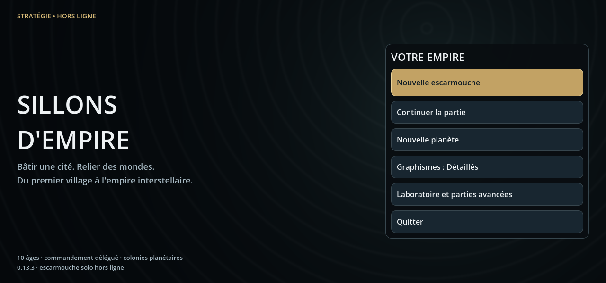
Menu principalCapture du moteur · OpenGL logiciel · cliquer pour agrandir
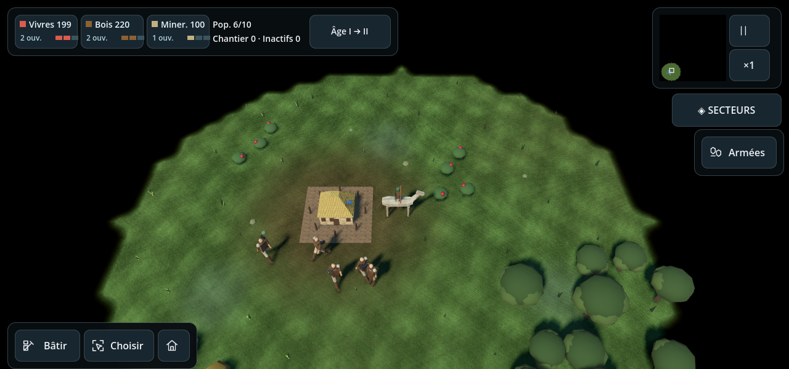
Terrain · âge ICapture du moteur · OpenGL logiciel · cliquer pour agrandir
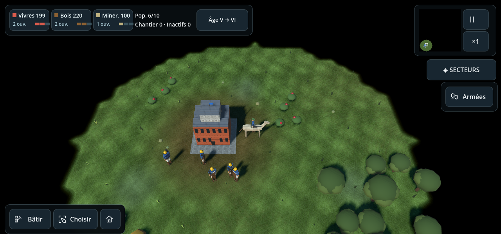
Terrain · âge VCapture du moteur · OpenGL logiciel · cliquer pour agrandir
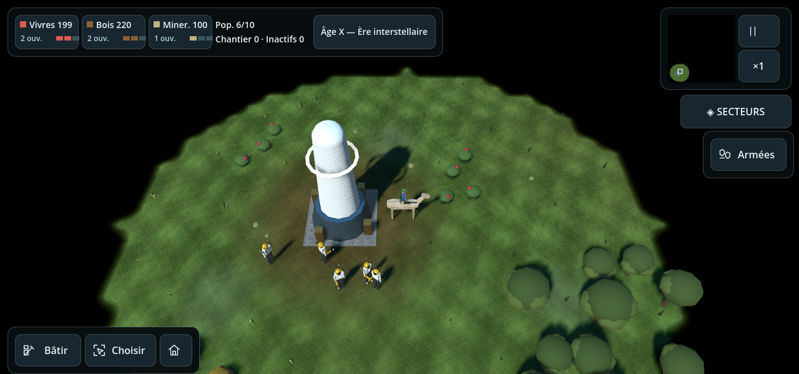
Terrain · âge XCapture du moteur · OpenGL logiciel · cliquer pour agrandir
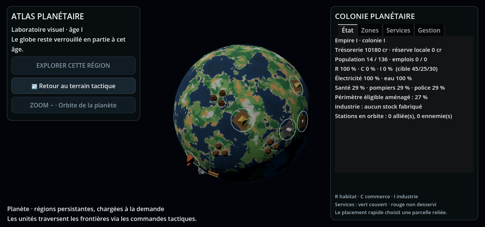
Globe · âge I (laboratoire)Capture du moteur · OpenGL logiciel · cliquer pour agrandir
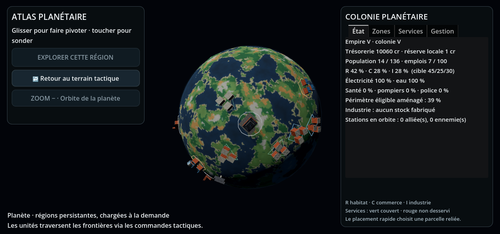
Globe · âge VCapture du moteur · OpenGL logiciel · cliquer pour agrandir
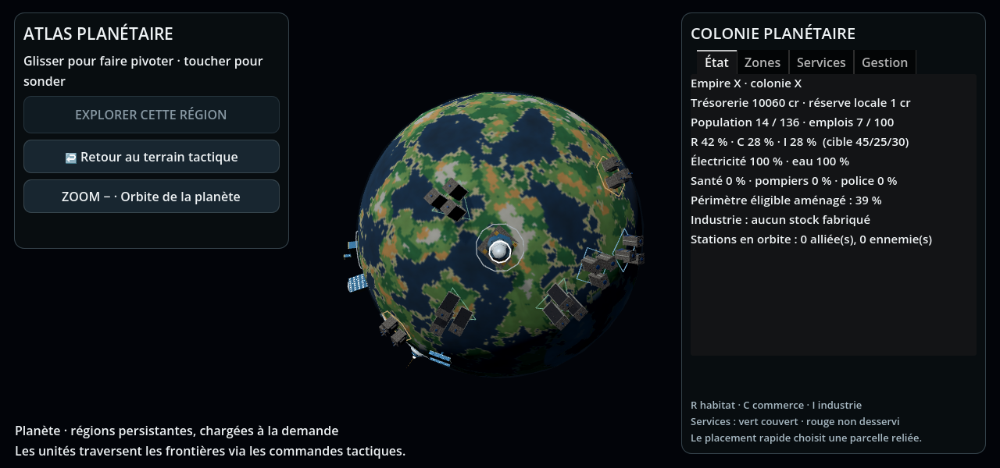
Globe · âge XCapture du moteur · OpenGL logiciel · cliquer pour agrandir
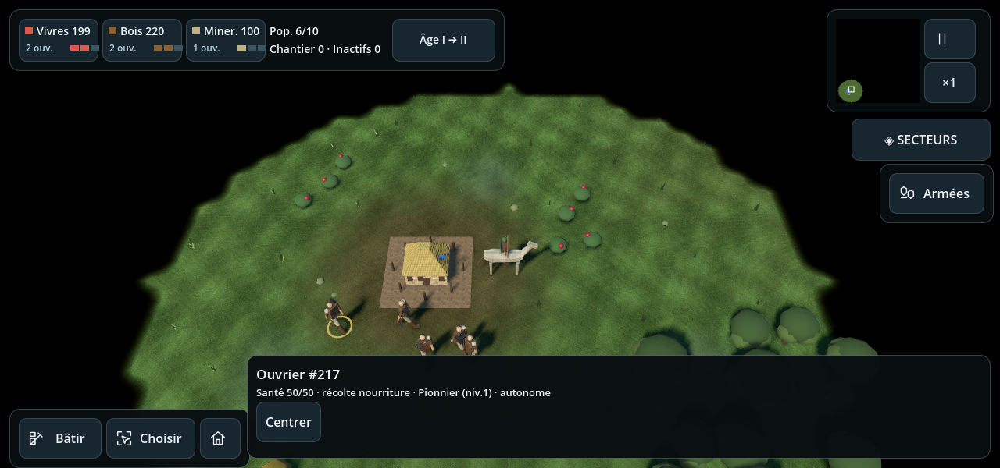
Sélection et actionsCapture du moteur · OpenGL logiciel · cliquer pour agrandir
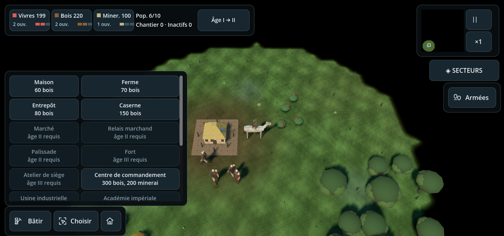
Catalogue de constructionCapture du moteur · OpenGL logiciel · cliquer pour agrandir
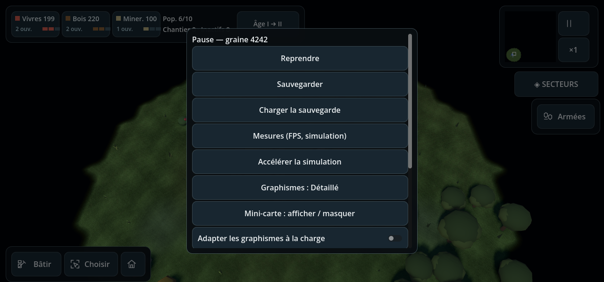
Pause et réglagesCapture du moteur · OpenGL logiciel · cliquer pour agrandir
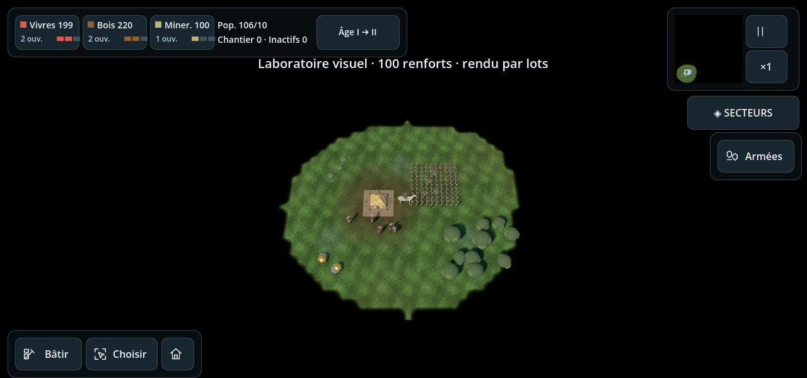
Scène de 100 renfortsCapture du moteur · OpenGL logiciel · cliquer pour agrandir
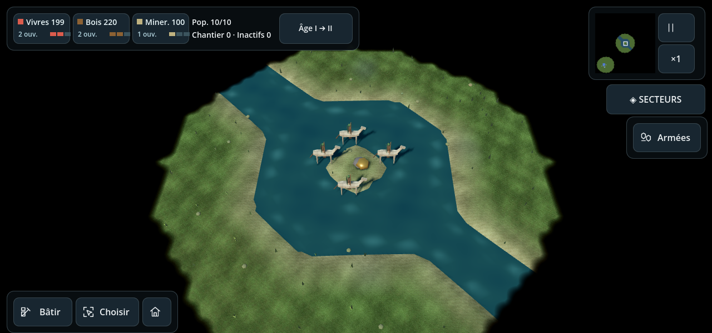
Rivière et brouillardCapture du moteur · OpenGL logiciel · cliquer pour agrandir